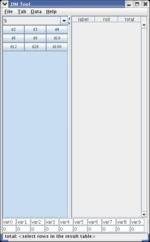
Screenshot-com-jcuz-dnd-dmtool-DMTool.png -
When you start dicetool it comes up as shown.
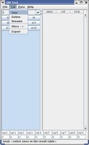
Screenshot-new-tab.png -
Create a new tab to store expressions by pulling down Tab-->New
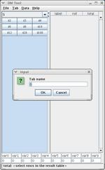
Screenshot-new-tab-name.png -
You will be prompted for a name for the new Tab.
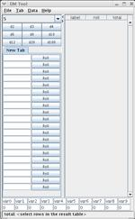
Screenshot-new-tab-shown.png -
Now you are ready to start working.
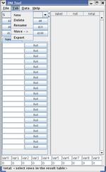
Screenshot-tab-menu.png -
Note the rest of the options on the Tab menu. You can create New
tabs, Delete them, Rename them, or Move them.
Export is a new feature that is not yet fully functional. This will
allow you to save an xml representation of your preferences to eventually allow
you to send them to another dicetool user for import.
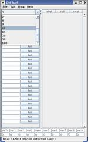
Screenshot-quantity-pulldown.png -
At the top left of the screen is a pulldown where you can choose some
prepared quantities. These are used in conjunction with the generic dice
buttons below (the ones marked d2 - d100).
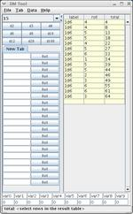
Screenshot-15d6.png -
Selecting a quantity and pushing the button results in the expression
being sent to the output pane (on the right). This shows the output of
15d6 in 15 rows. Each row shows it's row results and an accumulation result.
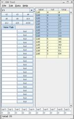
Screenshot-15d6-selectrows1.png -
If you don't want to use all 15, just select some, the Total for those
dice are shown at the bottom of the screen.
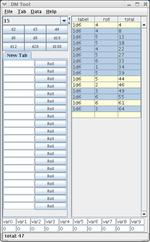
Screenshot-15d6-selectrows2.png -
You can use shift and ctrl buttons to select just the rows you need. The total is updated accordingly.
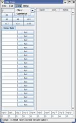
Screenshot-data-menu.png -
The Data menu has two items. Clear clears the right
panel of all results. Statistics shows you how close to average
you have been rolling.
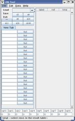
Screenshot-file-menu.png -
The File menu has options to Save and Load your
preferences. dicetool will also prompt you if you attempt
to close it without saving changes.
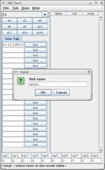
Screenshot-Roll-name.png -
You can type expressions into the white boxes on each tab. Here we enter
att(18)+11;2d6+5. See the expression documentation later for a
thorough examination of the elements. You can right-click the "Roll" button to
rename it.
Screenshot-Roll-results.png -
Clicking on the newly created 'Attack' button shows the results of that in the right panel. In this example it resulted in two rows. The first may be a "to hit" and the second may be damage.
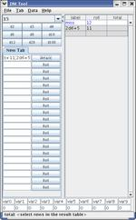
Screenshot-Roll-results-miss.png -
The att() function highlights rolls that automatically miss (by rolling a 1 on the implicit d20) with a blue color.
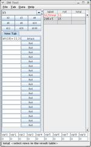
Screenshot-Roll-results-hit.png -
If you roll a 20 on the die when you call att(), it is an automatic hit and a
critical threat, this is shown in red.
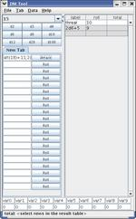
Screenshot-Roll-results-threat.png -
In this example I used att(18), which would indicate that I threaten a critical hit on an 18 or better. The example roll shows that I have threatened.
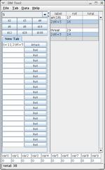
Screenshot-Roll-results-threat-backed.png -
I can hit the button again to see if I actually critical in this case. If both attempts hit, I can use ctrl select to give my damage total at the bottom.
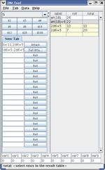
Screenshot-Roll-FullAttack.png -
I've created a new button with the expression att(18)+11;att(18)+6;2d6+5:2d6+5. The results at the left show four rows for my results, and should both of my attacks hit, the damage are automatically summed for me in the third column.
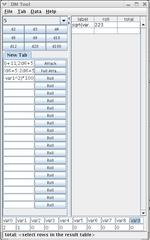
Screenshot-arbitrary-expressions.png -
Thanks to built-in javascript, you can use the expression parser for things
beyond just gaming. This example also touches the variable boxes at the
bottom. The variable names are in the boxes filled in with 'var0' through 'var9' and can be changed. The values are underneath. The third box contains the expression sqrt(var0^2+var1^2)*100 which shows me the hypotenuse of a triangle that is 2 units high by 1 unit wide is 2.23.